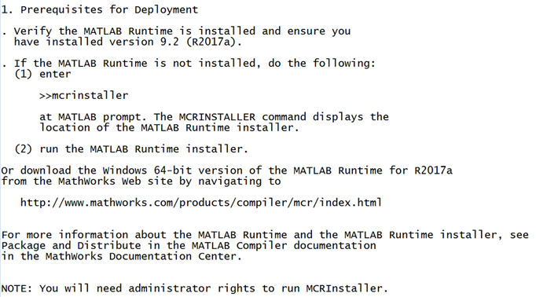

FromUTM2LL.m
M. Battaglia - mbattaglia@usgs.gov
Contents
Description
Version: (05/11/2017)
This program reads the input data file UTMfile.txt and transforms Cartesian UTM coordinates (East,North) into Geographic Coordinates (latitude,longitude)
Datum: WGS 84
Program I/O files
Input files
- UTMfile.txt : text file with UTM coordinates (East, North)
Ouput files
- LL.txt : text file with Geographic Coordinates (latitude,longitude)
Examples
Examples of the input and output files are available in the folder examples
To run the software
To run the compiled version
1 MATLAB Compiler

2 The following file must be in the same directory of FromUTM2LL.exe
- UTMfile.txt
3 Edit UTMfile.txt
4 Double click on FromUTM2LL.exe
To run the MATLAB version
The software runs on 64-bit GNU/Linux, Mac OS X, or MS-Windows, and it requires Matlab 9.2 (R2017a) or later. It is not currently usable on any 32-bit platform, on Solaris, or with Octave.
1 The following files / folders must be in the same directory of FromUTM2LL.m
- functions
- UTMfile.txt
2 Edit UTMfile.txt
3 Run FromUTM2LL.m
USGS Software Disclaimer
The software and related documentation were developed by the U.S. Geological Survey (USGS) for use by the USGS in fulfilling its mission. The software can be used, copied, modified, and distributed without any fee or cost. Use of appropriate credit is requested.
The USGS provides no warranty, expressed or implied, as to the correctness of the furnished software or the suitability for any purpose. The software has been tested, but as with any complex software, there could be undetected errors. Users who find errors are requested to report them to the USGS. The USGS has limited resources to assist non-USGS users; however, we make an attempt to fix reported problems and help whenever possible.
THE SOFTWARE IS PROVIDED AS IS, WITHOUT WARRANTY OF ANY KIND